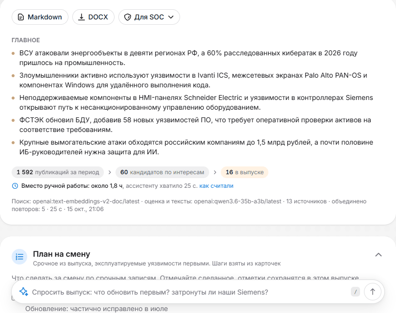
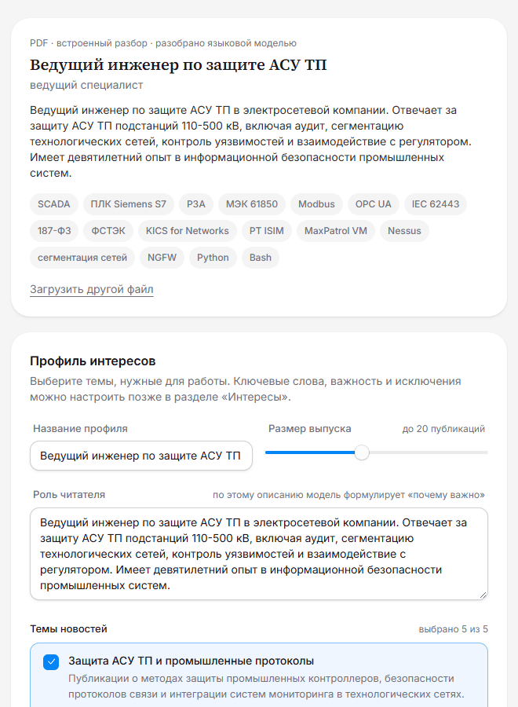
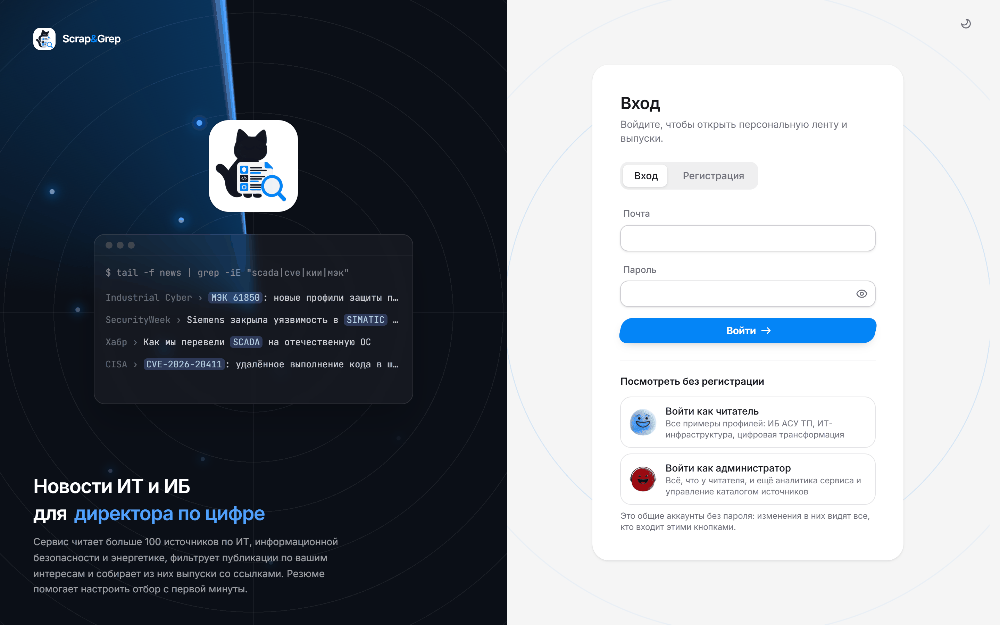
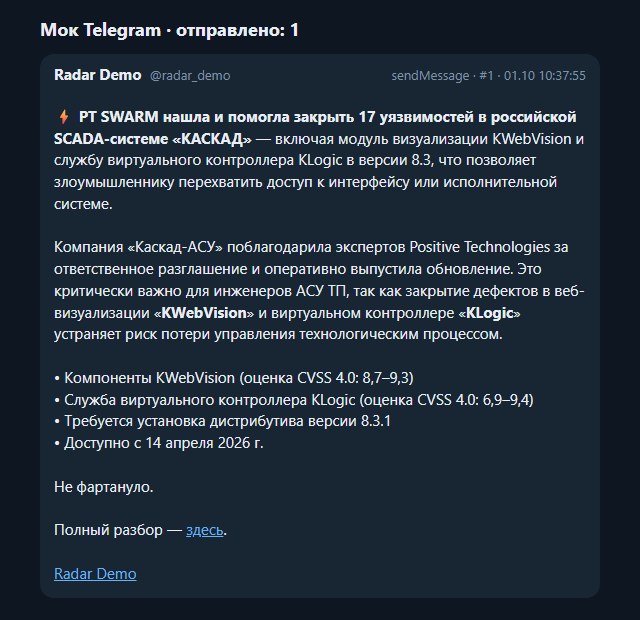
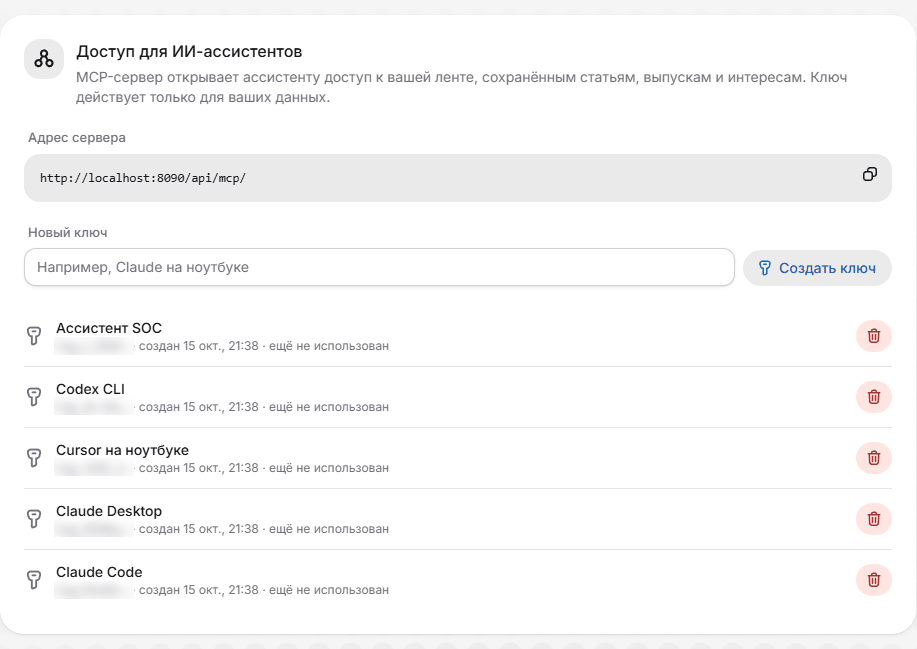

Scrap&Grep
Выпуск новостей ИБ под каждого читателя собирается за 24 секунды
Выпуск специалисту на Qwen3.6 35B в Yandex AI Studio. 104 источника, отбор по интересам, приоритет по правилу датасета организаторов и сверка с CISA KEV и БДУ ФСТЭК. Специалисту подробно за сутки, руководству тезисно за неделю.
localhost:8080

Хакатон «ИИ-ассистенты для энергетики», финал · команда misis-mojarung · октябрь 2026
Задача заказчика
Недельный выпуск вручную занимает у аналитика 102,5 минуты, четырём читателям это 34 999 ₽ в месяц
- Только в списках организаторов 62 источника: 24 сайта и 18 Telegram-каналов для специалистов, 20 сайтов для руководства.
- Часть сайтов не пускает бота: Cloudflare, Akamai, страницы, которые собирает скрипт.
- Специалисту нужны детали каждый день, руководству выводы раз в неделю.
- Аналитик ИБ собрал два выпуска одной недели за 205 минут и успел просмотреть около 80 публикаций из 1 737.
Ручная сборка в месяц при недельном выпуске каждому читателю: 102,5 минуты на выпуск по журналу аналитика, час аналитика SOC стоит 1 179 ₽.
Медиана аналитика SOC 149 000 ₽, Хабр Карьера, 10.08.2026; взносы 30%; 1 972 рабочих часа в 2026 году. Журнал аналитика: docs/eval/vs-analyst.md. Расчёт: docs/BUSINESS.md, «Экономика».
Решение
Scrap&Grep делает каждый шаг работы аналитика сам и показывает, почему
1
Сбор
104 источника, из 62 позиций списков организаторов читаются 60. Защищённые сайты читаются лестницей способов, свой адрес добавляет любой читатель.
2
Отбор
Профиль читателя: интересы, исключения, порог. Модель оценивает 60 кандидатов, у каждой записи и каждого отказа есть причина.
3
Приоритет
Правило датасета: атака на энергетику и промышленность РФ выше остальных, уязвимость с эксплойтом выше. Эксплойт сверяется с CISA KEV и БДУ ФСТЭК.
4
Выпуск
Специалисту за сутки с планом на смену, руководству за неделю с выводами и брифингом голосом. Markdown и DOCX, из браузера, консоли или на почту.
Аналитик ИБ собрал те же два выпуска за ту же неделю вручную: сравнение на следующем слайде.
Гипотеза жюри · Ассистент и аналитик
Аналитик собрал те же два выпуска вручную за 205 минут, ассистент за 85 секунд
Время на два выпуска
Время аналитика - его журнал: 75 минут на просмотр источников и по 65 минут на каждый выпуск. Ассистент собрал оба выпуска в 144 раза быстрее и просмотрел все публикации недели.
| Ассистент | Аналитик |
|---|
| Выпуск специалисту | 70,5 с | 102,5 мин |
| Выпуск руководству | 14,7 с | 102,5 мин |
| Записей в выпусках | 19 и 15 | 14 и 9 |
| Просмотрено публикаций | все: 1 737 и 1 757 | около 80 |
Оба выпуска специалисту ставят в «Главное» 0-day в Citrix NetScaler с высоким приоритетом. Аналитик добавил регуляторику и удары по энергосистеме, ассистент - бюллетени CISA ICS по оборудованию АСУ ТП, 17 уязвимостей SCADA «Каскад» и сверку номеров по CISA KEV и БДУ.
4 октября в каталог вошли ещё 19 источников, среди них Help Net Security, на который ссылается аналитик.
Неделя 25 сентября - 2 октября 2026 года, 69 источников. docs/eval/vs-analyst.md; ответ аналитика целиком - examples/vs-analyst.
Критерий 1 · Репрезентативность материалов
Каталог из 104 источников читает 60 из 62 позиций списков организаторов
localhost:8080/sources

1 737 публикаций за неделю сравнения с аналитиком. Стек приходит со снимком из 2 068 реальных публикаций 75 источников и собирает выпуск руководству сразу после старта.
Каждый источник опрашивается раз в 15 минут, сайт без ленты читается как страница новостей. Любой читатель добавляет сайт или канал по адресу, ассистент сам понимает, что это.
docs/DECISIONS.md, «Источники из датасета»; README, «Быстрый запуск».
Критерий 1 · Репрезентативность материалов
На 21 примере организаторов прочитаны все страницы, тип записи совпал в 7 случаях из 7
Каждый пример прошёл те же шаги, что запись выпуска, и лежит рядом с желаемым выводом.
| Что сравнивали | Результат | Пояснение |
|---|
| Страницы примеров | 21 из 21 | каждая страница читается так же, как источник каталога |
| Специалисты: тип и приоритет | тип 7 из 7, приоритет 4 из 7 | у specialist-4 в датасете стоит CVE другой уязвимости, WSUS из specialist-7 |
| Специалисты: посты Telegram | тип по содержанию | датасет кладёт пост в «Инфо» по источнику, Scrap&Grep даёт посту об уязвимости карточку и ссылки из поста, как в желаемом выводе |
| Руководство: двенадцать признаков датасета | 23 из 36 у gpt-oss:120b | у Qwen3.6 35B в Yandex AI Studio 24 из 36, у Alice AI LLM 22 |
Ещё в репозитории восемь выпусков в Markdown и DOCX, собранные 15 октября на текущем коде, и три сценария смены интересов с причиной у каждой статьи, которая пришла или ушла.
Прогон 15 октября 2026 года: examples/models/README.md, «Датасет организаторов»; examples/dataset/README.md; examples/README.md.
Критерий 2 · Техническая реализация
Стек поднимается одной командой: один образ бэкенда в шести ролях и граф сборки с чекпоинтами
Сбор
worker-ingestRSS, t.me/s, страницы, лестница чтения, эмбеддинги новых статей
FlareSolverrдля сайтов, которые проверяют посетителя скриптом
Хранение
PostgreSQL 18статьи, pgvector и полнотекстовый поиск, чекпоинты графа
Valkeyочереди задач, кеш ответов модели, прогресс
ClickHouseсобытия показов и отметок
Сборка и модель
worker-digestграф LangGraph, оценка и выжимки веером
Языковая модельQwen3.6 35B-A3B в Ollama или vLLM либо Yandex AI Studio
worker-profile, worker-mediaрезюме и вкус читателя; ролики и брифинг
Доступ
web (Caddy) и api (FastAPI)интерфейс, REST, прогресс по SSE, MCP
cliвыпуск в Markdown и DOCX одной командой
schedulerопрос раз в 15 минут, выпуски по расписанию
Граф сборки выпуска
prepareпрофиль и период
›
retrieveпоиск по смыслу и словам
›
gradeвеер: задача на кандидата
›
selectпорог, лимит, исключения
›
clusterсклейка повторов, темы
›
summarizeвеер: задача на статью
›
composeразделы, «Главное»
›
persistзапись выпуска
Упавший воркер продолжает с прерванного шага: чекпоинты в PostgreSQL. docs/ARCHITECTURE.md, «Компоненты» и «Граф сборки».
Критерий 2 · Техническая реализация
Сайт, который не пускает бота, читается следующей ступенью лестницы
1
Обычный запросSecurityLab, Habr: 0,2-0,7 с2
Заголовки браузерадля сайтов, которым хватает User-Agent браузера3
Отпечаток ChromeCloudflare с 403 и заглушкой: Dark Reading 0,9 с, Cybernews 1,0 с, SecurityWeek 1,4 с, Netskope 4,2 с4
FlareSolverr в стекепроверка Cloudflare с JS: 15,9 с; McAfee за Akamai
Прокси
Общий, свой у источника или пулом с ротацией при 403 и 429.
Видно у источника
Ступень и причина записываются: «403, заглушка Cloudflare на шаге «обычный запрос», прочитан через curl_cffi».
Безопасно
Защита от SSRF на каждой ступени: внутренние адреса не читаются.
Замеры 2 октября 2026 года, без прокси. docs/DECISIONS.md, «Сбор: лестница способов чтения».
Критерий 2 · Техническая реализация
Запись сверяется с текстом статьи, с базами уязвимостей и с тем, вышло ли исправление
Сборполный текст со страницы, если в ленте анонс
›
Поискпо смыслу и по словам для каждого интереса
›
Оценка60 кандидатов по шкале 0-3 с причиной
›
Склейкаодна уязвимость - одна запись
›
Записьтип, карточка, приоритет, «почему важно»
›
Проверкачего нет в статье, нет в карточке; номера по CISA KEV и БДУ
›
ВыпускMarkdown с оглавлением, DOCX, история
Модель сама вызывает lookup_vulnerability: CISA KEV, БДУ ФСТЭК, NVD, EPSS и Exploit-DB по локальным копиям. Номера, о которых она не спросила, граф проверяет сам.
Пока производитель только обещает обновление, карточка так и пишет, а «почему важно» и план на смену советуют временные меры. «Что изменилось» сообщает об исправлении, когда оно вышло.
Пересказы одной уязвимости склеиваются по номерам CVE и БДУ: в восьми выпусках примеров склеен 51 пересказ.
Карточка уязвимости

docs/DECISIONS.md, «Инструмент модели», «Совет согласован с тем, вышло ли исправление», «Склейка дублей по номерам уязвимостей».
Критерий 2 · Техническая реализация
Специалист получает выпуск за сутки с планом на смену, руководство выводы за неделю
Выпуск специалисту по ИБ АСУ ТП

«Главное», путь от публикаций периода до записей и строка «Вместо ручной работы». Дальше план на смену с галочками, которые хранятся на сервере, и пометка «касается нас» у продуктов из «Наших систем».
Выпуск руководству

Записи в одно-два предложения с признаками датасета, без номеров уязвимостей. Наверху «Что это значит для нас», рядом период в цифрах против прошлого выпуска и брифинг голосом на две минуты.
Критерий 2 · Техническая реализация
Правка профиля сразу меняет подборку, и это видно ещё до сборки
localhost:8080/profiles

Убран интерес «Уязвимости»
19 записей → 20: пришло 7, ушло 6.
Исключение «уязвимости Citrix»
Пришло 5, ушло 4; запись о Citrix ушла с причиной.
Порог 0,50 → 0,70, размер 20 → 10
Ушли 9 записей, у каждой её оценка.
Поля карточек и блоки выпуска
Профиль прячет лишние строки карточек и любые из 14 блоков вокруг записей.
Предпросмотр работает без языковой модели. examples/change; examples/README.md; docs/TASK-MAP.md, «Что нового в финале».
Критерий 2 · Техническая реализация
Весь стек переходит на Yandex AI Studio переменными в .env, код не меняется
Сборка на одном сценарии, секунды
Выпуск специалисту
Выпуск руководству
Сквозная проверка на полном стеке Yandex: выпуск за 21,6 с, ролик на 55 с с голосом SpeechKit за 175 с.
| Замер | Yandex | Сравнение |
|---|
| Признаков руководства из 36 | 24 | 23 у gpt-oss-120b |
| Точность первых 20 кандидатов | 0,65 | 0,40 у embeddinggemma |
| Полнота первых 60 кандидатов | 0,443 | 0,426 у embeddinggemma |
Тексты пишет Qwen3.6 35B или Alice AI LLM через OpenAI-совместимый API, эмбеддинги считает text-embeddings-v2, ролики и брифинги озвучивает SpeechKit. Видеокарта не нужна.
Профиль «Специалист по ИБ АСУ ТП». README, «Модели Яндекса»; docs/INSTALL.md, «Модели Яндекса»; docs/eval/retrieval.md; docs/DECISIONS.md, «Yandex AI Studio».
Критерий 2 · Техническая реализация
Сценарий выпуска держится на любой модели и без модели
Записей, совпавших с первым прогоном gpt-oss:120b, из 20, и время сборки
Разделы, карточки, приоритеты и проверка работают на всех моделях: выпуск собирается целиком.
Отбор держится на поиске: даже без модели 16 записей из 20 те же. Два прогона одной gpt-oss:120b совпадают в 17.
Модель меняется в .env. Примеры собраны на gpt-oss:120b, в стеке по умолчанию пишет локальная Qwen3.6 35B-A3B.
Выпуск специалисту по ИБ АСУ ТП за неделю примеров: 60 кандидатов, до 20 записей, пустой кеш, 15 октября 2026 года. examples/models/README.md
Критерий 2 · Техническая реализация
Стек работает в закрытом контуре, наружу ходит только загрузчик источников
offline_bundle.sh save: 7 образов ядра 4,7 ГБ и модели 1,6 ГБ за 4 мин 21 с. load в пустой каталог за 3 мин 29 с, копия поднялась без сети и прошла scripts/smoke.py целиком.
Модель финала на своём сервере: аренда и окупаемость
| Модель и карта | В месяц | С предоплатой | Окупается с читателей |
|---|
| Qwen3.6 35B-A3B, 22,6 ГБ; RTX 4090 24 ГБ | 69 674 ₽ | 52 256 ₽ | 9 |
| gpt-oss-120b, 65 ГБ; H100 80 ГБ | 246 074 ₽ | 221 467 ₽ | 29 |
Стек ассистента ставится на тот же сервер. По опубликованным замерам скорости gpt-oss-120b собирает выпуск специалисту примерно за 45 с на H100 и за 70 с на A100, это около 80 и 50 выпусков в час. Цена с предоплатой указана за 30 дней вперёд, окупаемость посчитана по читателям с недельными выпусками.
docs/INSTALL.md, «Закрытый контур» и «Требования к железу»; docs/eval/economics.md, immers.cloud, 14.10.2026; docs/QUALITY.md, «Что проверено».
Критерий 2 · Техническая реализация
966 тестов бэкенда и 841 тест фронтенда, одни и те же проверки в GitLab и GitHub Actions
966
тестов бэкенда на настоящих PostgreSQL, Valkey и ClickHouse, покрытие строк 86%
841
тест фронтенда в 115 файлах, Testing Library и MSW, покрытие строк 98%
17 и 15
заданий GitLab CI и GitHub Actions из одних скриптов ci/; прогон GitHub Actions 15 октября прошёл целиком
28
выпусков примеров проверяет check_examples.py: у каждой уязвимости одна запись
На запущенном стеке
| Проверка | Результат |
|---|
| Нагрузка на чтение, k6, 50 пользователей | 4 реплики api: 615 запр/с, p95 128 мс |
| Остановка одной из четырёх реплик api | 0 неудачных из 15 670 запросов |
| Остановка Ollama посреди сборки | выпуск готов через 2 с, недостающее дописал автономный алгоритм |
scripts/smoke.py, 15 октября | прошёл каждый шаг пути жюри |
ruff и mypy --strict, oxlint и tsc без замечаний. docs/QUALITY.md, «Тесты» и «Что проверено»; docs/CI.md.
Критерий 2 · Персонализация
Резюме задаёт профиль с первой минуты, и лента сразу подбирается под специалиста
Загрузка резюме

Должность, навыки и предложенные темы. Имя и контакты вырезаются до анализа, файл удаляется сразу после разбора; сканы читает docling.
Для вас

У каждой статьи видно, почему она здесь: интерес, опыт из резюме, похожее на то, что читатель отметил; «Причины подбора» раскладывают оценку на части.
Критерий 2 · Рекомендательная система
Своя рекомендательная модель строит ленту по вкусу читателя и учится на его отметках
1. Кандидатыодин SQL-запрос: близость статей за две недели к каждой грани вкуса по эмбеддингам pgvector и ключевым словам
2. Оценкаграни с доверием: интерес 0,45, резюме 0,10, выученная по лайкам до 0,35, избегаемая вычитается; плюс свежесть, источник, «нравится коллегам»
3. Перестановкакопии одной истории выбрасываются, серии одного источника разбиваются, каждое седьмое место - «Что-то новое»
4. Обучениеночью LightGBM LambdaRank на показах и отметках из ClickHouse с поправкой на место в списке
Каждая карточка объясняет оценку: какой интерес совпал, что из резюме, на что похоже из отмеченного. Отметки весят по-разному (сохранение 1,2, лайк 1,0, открытие 0,4, скрытие -0,7, дизлайк -1,0) и слабеют вдвое за три недели.
LightGBM заменяет ручные веса, только если на трёх последних днях поднимает nDCG@20 больше чем на 0,01; половина читателей остаётся контрольной группой. Так в выдачу попадает только модель, которая доказала прирост на отметках читателей.
nDCG@20 ленты специалиста по ИБ АСУ ТП до первых отметок
Интересы дают главный прирост, резюме помогает, пока интересов нет. Неделя из 871 статьи.
docs/ARCHITECTURE.md, «Персональная лента»; docs/DECISIONS.md, «Обучаемое ранжирование»; docs/eval/recsys.md, docs/eval/ranker.md.
Критерий 2 · Персонализация
Профиль учится на отметках читателя и передаётся коллеге по ссылке
Интересы · Подстройка по отметкам

Вес интереса растёт от «больше такого» и падает от «меньше такого», не больше чем на десятую часть; новая тема предлагается по статьям, которые профиль сам не нашёл. Сохранённый профиль при этом не меняется.
Профиль по ссылке

Коллега открывает ссылку и добавляет копию профиля себе. Выпуски, отметки и резюме владельца по ссылке не видны.
Критерий 2 · Персонализация
Читатель входит одной кнопкой, проходит тур по разделам и читает статьи по-русски
localhost:8080

Общие аккаунты
«Войти как читатель» открывает четыре примера профилей без пароля, «Войти как администратор» добавляет «Аналитику» и инструменты каталога.
Знакомство
Десять шагов по всем разделам с мини-превью, затем первый профиль интересов по резюме, из шаблона или вручную и первый выпуск.
Перевод в читалке
Английские и китайские статьи модель переводит на русский. Код, номера CVE и БДУ и числа не меняются, оригинал открывается одной кнопкой.
docs/TASK-MAP.md, «Что нового в финале»; docs/DECISIONS.md, «Перевод английских и китайских статей».
Критерий 3 · Бизнес-ориентированность
Выпуск приходит по расписанию, в Telegram-канал компании и ИИ-ассистенту сотрудника
Каждый день, по будням или раз в неделю, в местное время читателя. Кнопка «На почту» шлёт выпуск письмом с DOCX во вложении.
Пост в канале

Боты публикуют новости по расписанию: у каждого канала своя аудитория, тон и подача ссылок, черновик уходит на проверку.
Доступ для ИИ-ассистентов

MCP-сервер отдаёт Claude, Cursor и другим клиентам ленту, сохранённое, выпуски и интересы только этого читателя. Ключ показывается один раз.
Критерий 3 · Бизнес-ориентированность
Ролик по выпуску и брифинг для руководства озвучивает Yandex SpeechKit без видеокарты
Короткое видео

Двенадцать голосов SpeechKit или четыре голоса Qwen3-TTS в стеке, страница называет движок и голос.
Вертикальный ролик на полминуты-минуту: картинки статей, крупная цифра новости, QR-код статьи и субтитры по словам. Цифры сценария сверяются с текстом новости.
«Слушать брифинг» пересказывает выпуск руководству голосом за две минуты, без номеров уязвимостей и адресов.
docs/ARCHITECTURE.md, «Короткие видео» и «Брифинг голосом»; docs/INSTALL.md, «Модели Яндекса».
Критерий 3 · Бизнес-ориентированность
Аналитика показывает, что сотрудники видят, открывают и отмечают
Аналитика

Читатели, доли открытий и отметок, путь от показа к отметке и дни. Только числа, без текстов и адресов; раздел видит администратор.
Аналитика · ранжирование

Ручные веса и обученная модель по группам читателей, ночные обучения. Те же события - метрики пилота: открытия и отметки по неделям.
Критерий 3 · Бизнес-ориентированность
Четырём читателям с недельными выпусками ассистент экономит 27 486 ₽ в месяц
27 486 ₽
экономии в месяц на трёх специалистов и руководство, 329 832 ₽ в год
Ассистент окупается, пока ручной выпуск дольше 22 минут. У аналитика он занял 102,5 минуты, в 4,7 раза дольше.
Выпуск специалисту: 171 753 токена на вход и 17 338 на выход, 3,04 ₽. Руководству 1,96 ₽.
Хабр Карьера, 10.08.2026; тарифы Ollama; курс ЦБ 83,9497 ₽ на 15.10.2026; Selectel. Проверено 14.10.2026. docs/BUSINESS.md, «Экономика».
Внедрение
Пилот на 4 недели проверит главное число: полноту выпуска против аналитика
Установка
Закрытый контур: образы, веса модели, корпоративный прокси, проверочный сценарий. 10-20 сотрудников из разных групп, у каждого свой профиль.
Что измеряем
Время ручной сборки и проверки, полнота «обязательных» по разметке человека, nDCG@20, доля открытых записей и отметок. Шкала, файлы и скрипт разметки готовы.
Успех
Полнота «обязательных» не ниже 90% и проверка недельного выпуска не дольше 30 минут.
Попробовать
docker compose up -d --build
Откройте localhost:8080 и нажмите «Войти как читатель».
docker compose run --rm cli digest
Оба выпуска в Markdown и DOCX в папке out/.
Репозиторий: git.codenrock.com/codenrock/ii-assistenty/misis-mojarung/assistent-dlya-sozdaniya-it-ib-daydzhestov
docs/BUSINESS.md, «Пилот»; docs/eval/human; README, «Быстрый запуск».